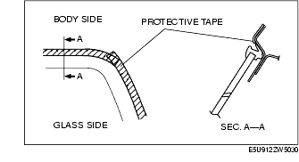
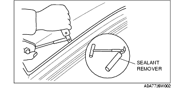
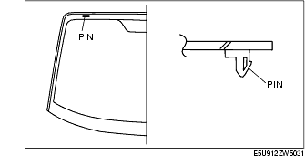
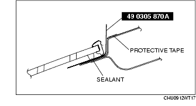
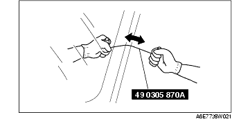

Workshop Manual ➭ BODY & ACCESSORIES ➭ GLASS/WINDOWS/MIRRORS ➭ WINDSHIELD REMOVAL
WINDSHIELD REMOVAL
id091200417800
{: #wp1059776}
-
Remove the battery cover.
-
Disconnect the negative battery cable.(See BATTERY REMOVAL/INSTALLATION [L8, LF].)
-
Remove the following parts:
(1) Wiper arm and blade (See WIPER ARM AND BLADE REMOVAL/INSTALLATION.) {: #wp1059814}(2) Cowl grille (See COWL GRILLE REMOVAL/INSTALLATION.) {: #wp1059832}(3) Side cowl grille (See SIDE COWL GRILLE REMOVAL/INSTALLATION.) {: #wp1059850}(4) Windshield garnish (See WINDSHIELD GARNISH REMOVAL.) {: #wp1059868}(5) Rearview mirror (See REARVIEW MIRROR REMOVAL/INSTALLATION.) {: #wp1059886}(6) Remove the female wedge. (See CONVERTIBLE TOP DISASSEMBLY/ASSEMBLY.) {: #wp1059904}(7) Remove the map light. (See MAP LIGHT REMOVAL/INSTALLATION.) {: #wp1059922}(8) Remove the A-pillar trim. (See A-PILLAR TRIM REMOVAL/INSTALLATION.) {: #wp1059940}(9) Front header trim (See FRONT HEADER TRIM REMOVAL/INSTALLATION.)
- Apply protective tape along the edge of the body.{: #wp1059977}

*Note*{: #wp1060004}
• Overlap and adhere the protective tape to the corners to prevent damage.
- Remove the windshield molding by pulling it outward.
*Note*{: #wp1060032}
• If the windshield molding is difficult to remove, warm the windshield molding using a hot air blower. {: #wp1062733}• The windshield molding is a replacement part.
Not Reusing Windshield
*Note*{: #wp1060070}
• For the areas of the sealant that are difficult to cut, use the SST (piano wire) and follow the procedure under "Reusing Windshield".
Warning
• Using the SST (piano wire) with bare hands can cause injury. Always wear gloves when using the SST (piano wire).
- Cut out the sealant all around the glass using a sealant remover.{: #wp1060138}

- Remove the windshield.
Reusing Windshield
Warning
• Using the SST (piano wire) with bare hands can cause injury. Always wear gloves when using the SST (piano wire).
*Note*{: #wp1060222}
• Before removing the windshield from the body, mark the position of the windshield by affixing tape to the windshield and body panel.
- Avoiding the pin on the inside of the vehicle, insert the SST (piano wire) which has been cut to sufficient length.{: #wp1060240}

- Wind each end of the SST (piano wire) around a bar.{: #wp1060276}

*Note*{: #wp1060312}
• Use a long sawing action to spread the work over the whole length of the SST (piano wire) to prevent it from breaking due to localized heating.
- Secure one end of the SST (piano wire), and while pulling the other end, cut the sealant around the windshield.{: #wp1060339}

-
Pinch the pin from the inside of the vehicle and detach it.
-
Remove the windshield.
-
If the pin is damaged, remove the pin.
*Note*{: #wp1060405}
• Before removing the pin from the windshield glass, place an alignment mark on the windshield.